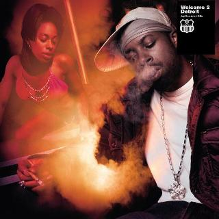
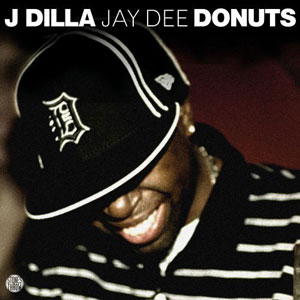

James Dewitt Yancey (February 7, 1974 – February 10, 2006), better known by the stage names J Dilla and Jay Dee, was an American record producer and rapper who emerged in the mid-1990s underground hip hop scene in Detroit, Michigan, as one third of the music group Slum Village. He was also a member of the Soulquarians, a musical collective active during the late 1990s and early 2000s.
Although his life and career were short, J Dilla is widely considered to be one of the most influential and greatest producers in the hip-hop genre. It was described in The Guardian that "his affinity for crafting lengthy, melodic loops peppered with breakbeats and vocal samples took instrumental hip-hop into new, more musically complex realms."
 Welcome 2 Detroit is the debut studio album by American hip hop recording artist J Dilla, released on February 26, 2001. The album followed his group Slum Village's critically acclaimed Fantastic, Vol. 2, and kicked off BBE's "Beat Generation" series (producer-driven albums).
Welcome 2 Detroit bears the name "Jay Dee" as well as "J Dilla", and marks the first time Dilla (who until that point was still known as Jay Dee) officially used the name J Dilla.
Champion Sound is the only studio album by the duo Jaylib (hip hop musicians J Dilla and Madlib). Half of the songs are produced by Madlib and feature J Dilla on vocals, and the other half are produced by J Dilla and feature Madlib on vocals. This album was the first of the Madlib duo collaboration albums made during the 2000s.
 Donuts is the second studio album by the American hip hop producer J Dilla, released on February 7, 2006, by Stones Throw Records. It was released on the day of his 32nd birthday, three days before his death.
The album was recorded in 2005, largely during J Dilla's extended stay at Cedars-Sinai Medical Center due to complications from thrombotic thrombocytopenic purpura (TTP) and lupus. Twenty-nine of the album's thirty-one tracks were recorded in J Dilla's hospital room, using a 45-rpm record player and a Boss SP-303 sampler.
Donuts received widespread critical acclaim for its dense, eclectic sampling and its perceived confrontation of mortality. Pitchfork placed the album at number 38 on their list of the top 50 albums of 2006 and at number 66 on their list of the top 200 albums of the 2000s. In 2020, Rolling Stone ranked the album at 386 in their 500 Greatest Albums of All Time. It is regarded as J Dilla's magnum opus, a classic of instrumental hip hop, and one of the most influential hip hop albums of all time, with artists of many genres citing it as an inspiration.
Above are the albums released during J Dilla's life, however there are plethora of other posthumously released works and other EPs, beat tapes, etc... If you would like to learn more, visit the links below: